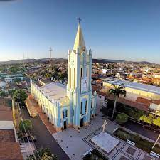

Informações técnicas sobre relevo, população, IDH etc.
| INFORMAÇÕES | |
|---|---|
| Municípios limítrofes | Crateús , Independência e Mulungu |
| Fundação | 10 de outubro de 1870 (150 anos) |
| Área total | 835,706 km² |
| Clima | tropical quente semiárido brando |
| PIB | R$ 124 647,361 mil |
| IDH | 0,629 — médio |
| INFORMAÇÕES TERRITORIAIS | |
|---|---|
| Número de habitantes | 40 903 habitantes |
| Superfície de Várzea Alegre |
83 571 hectares
835,71 km² (322,67 sq mi) |
| Densidade populacional | 48,7 ha./km² |
| Altitude de Várzea Alegre | 311 metros de altitude |
| Coordenadas geográficas decimais |
Latitude:
-5.35
Longitude: -40.3833 |
| Coordenadas geográficas sexagesimais | Latitude: 5° 21' 0'' Sul , Longitude: 40° 22' 60'' Oeste |
| INFORMAÇÕES DO MUNICÍPIO | |
|---|---|
| Endereço da Prefeitura Municipal de Várzea Alegre |
Várzea Alegre
Prefeitura de Várzea Alegre
Rua Deputado Luiz Otacilio Correia, 153 Várzea Alegre - CE, 63540-000 Brasil Brasil |
| Telefone da prefeitura |
88) 3541-1337
Internacional: +55 88 3541-1337 |
| Fax |
(88) 3541-1337
Internacional: +55 88 3541-1337 |
| Endereço electrónico da prefeitura |
flaviosalviano@yahoo.com.br
|
| Site oficial do município | varzeaalegre.ce.gov.br |
| INFORMAÇÕES DO ADMINISTRATIVAS | ||
|---|---|---|
| Prefeito de Várzea Alegre | JOSÉ HELDER MÁXIMO DE CARVALHO | |
| Partido politico | MDB | |
| INFORMAÇÕES DE TRANSPORTE | |
|---|---|
| Transporte urbano disponível | Rodovias Estaduais e Nacionais |
| Aeroporto |
Aeroporto de Sobral
185.8 km
Aeroporto de Picos
228.6 km
Aeroporto Regional do Cariri
241.8 km
|
| INFORMAÇÕES DE DISTÂNCIA A OUTRAS CIDADES | ||
|---|---|---|
| São Paulo : 2134 km | Rio de Janeiro : 1978 km | Brasília : 1424 km |
| Salvador : 873 km | Belo Horizonte : 1656 km | Manaus : 2195 km |
| Curitiba : 2428 km | Fortaleza : 273 km mais perto | Recife : 679 km |
| Belém : 1001 km | Porto Alegre : 2974 km | Guarulhos : 2113 km |
| Campinas : 2311 km | São Luís : 537 km | Goiânia : 1590 km |
| Distância calculada em linha reta! | ||
Conheça mais sobre a história da Várzea Alegre.
Contam os mais antigos moradores de Várzea Alegre, que os primeiros exploradores chegaram a estas terras pelas caminhadas que faziam em direção ao Cariri, tendo como referência o município do Crato. Esses viajantes, encantados com a beleza do verdejante vale e a cantoria dos pássaros, batizaram o lugar com o nome de Várzea Alegre.
Constam nos registros oficiais que o município de Várzea Alegre foi criado pela Lei Provincial Nº 1.329, de 10 de outubro de 1870. Desmembrado do município de Lavras da Mangabeira, instalado a 02 de março de 1872. Fato curioso é que o município foi extinto pelo Decreto Nº 193, de 20 de maio de 1931, quando o seu território ficou anexado ao município de Cedro. Pela luta de influentes políticos do local, Várzea Alegre retomou a condição de município pelo Decreto Nº 1.156, de 04 de dezembro de 1933.
No tocante ao religioso, a Paróquia do município foi criada no dia 30 de novembro de 1863, tendo como padroeiro São Raimundo Nonato, sendo seu primeiro vigário o Padre Benedito de Sousa Rêgo. O seu patrimônio constava de 400 braças de terra em quadrado, doadas em 19 de outubro, pelo Major Joaquim Alves Bezerra, pela sua mulher e por outros irmãos. Segundo a tradição, a primeira Igreja de São Raimundo Nonato foi construída pelos filhos de Raimundo Duarte Bezerra, figura que ficou conhecida como "Papai Raimundo", o patriarca do município. O nome de Várzea Alegre foi oficializado pela Lei nº 1.329 de 1870, e tem origem na planície ou várzea, onde está situada a cidade.
Saiba mais sobre os melhores lugares e o que fazer em Várzea Alegre.
Dentre os poucos pontos turisticos de Várzea Alegre o que mais se destaca é a Matriz de São Raimundo Nonato onde se celebra o maior evento que ocorre na cidade a festa de São Raimundo Nonato

Veja como chegar nos melhores pontos de Várzea Alegre
Essas rotas servem apenas para fins de planejamento. Obras, trânsito intenso, fatores climáticos ou outros eventos podem fazer com que as condições sejam diferentes dos resultados no mapa, por isso é preciso planejar o trajeto levando tudo isso em conta. Obedeça a todas as sinalizações ou avisos que aparecerem em seu trajeto.